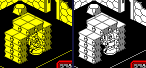
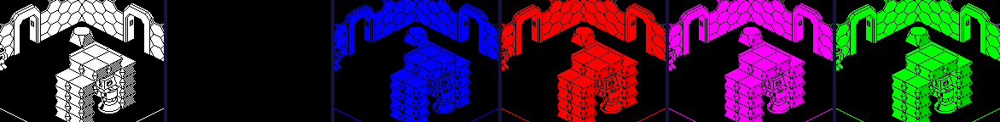
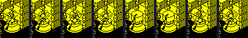
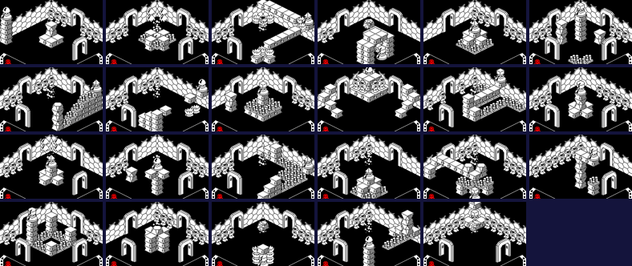
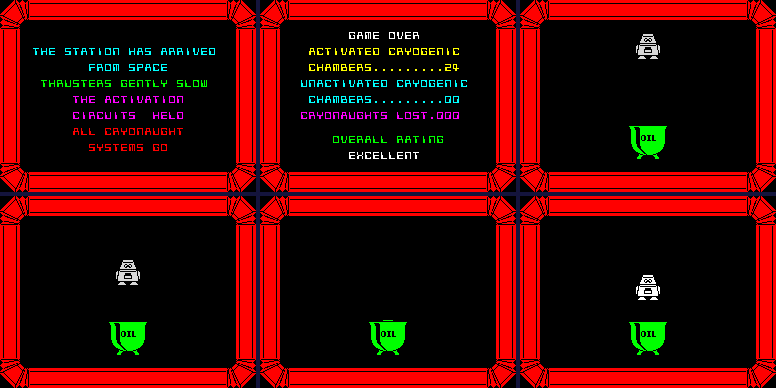

| Alien 8 | Valves, sockets and the cryogenic chambers |
The robot's job is to bring the frozen crew's chambers back to life: 24 cryogenic chambers, each with a socket that takes one kind of valve, and 36 places about the ship where valves lie. A valve seated on a socket of its kind activates its chamber; the twenty-fourth ends the game. The places are Knight Lore's special objects under another name (Knight Lore's charms); the sockets, the chambers, the valves' own behaviour and the count at the end are Alien 8's own.
PLACES is 36 records of nine bytes: +0 what lies there, a graphic, dealt at every new game; +1 to +4 where it starts, U, V, Z and the room, from the tape; +5 to +8 where it is now. The 36 places start in 36 different rooms, none of them a chamber. INIT_SPECIAL_OBJECTS deals them at every new game: the kinds of valve, graphics 96 to 99, go round in turn from a start taken from the seed and the refresh register, and every sixteenth place by a second count, started from the random number, is an extra life (graphic 12) instead -- the kind it would have had is skipped. Run on its own in the simulator for all 64 combinations that matter (the kind to start at, and the second count's low four bits), a game has 2 or 3 extra lives -- three when those four bits are 1, 2, 3, 4, one time in four. And since the extra lives are sixteen places apart and the kinds come round every four, every extra life of a game takes the place of the same kind: three kinds always have nine valves and the fourth has seven, or, in a game with three extra lives, 6 -- exactly as many as its 6 sockets. In such a game every valve of that kind is needed, and one lost (see below) leaves a chamber that can never be activated (the counts are measured; that game was not played to its end). The places as this page's game dealt them (the simulator's first game, whose seed is always the same):
The kinds, the valves this game dealt of each, and the chambers that take them, read from the room data (the crew are the frozen cryonauts in them):
| Valve | Kind | Dealt this game | Socket | Chambers | Crew |
|---|---|---|---|---|---|
| 96 | red | 9 | 112 | rooms $0C, $28, $7A, $99, $A5, $B6 | 34 |
| 97 | magenta | 9 | 113 | rooms $41, $62, $6E, $96, $AA, $D6 | 37 |
| 98 | cyan | 9 | 114 | rooms $1D, $31, $4B, $84, $8D, $94 | 27 |
| 99 | white | 7 | 115 | rooms $0A, $4F, $65, $8C, $BA, $F8 | 34 |
When he enters a room, FIND_SPECIAL_OBJS_HERE makes a record in 2 or 3 for each place lying there -- Knight Lore's routine instruction for instruction, the record's +$10 and +$11 pointing back at the place -- and before the next room is built UPDATE_SPECIAL_OBJS writes a valve's graphic and position back through that pointer. That is how a valve stays where it is left. An extra life is not written back: touched, it becomes a sparkle whose end (SPARKLE_END_PLACE) empties its place for good.
The pick-up key (TAKE_OR_LEAVE) picks up a valve he is on or beside; failing that, puts down the oldest thing he carries, under himself, lifting him 12 onto it; failing that, moves what he carries one slot along. He carries three, first in, first out, shown in the panel's three boxes, coloured by kind. Only the two records at VALVES are searched, for a valve to take and for a free record to put one in: so only valves can be carried, and a room holds at most two -- a third cannot be put down there. Picking one up zeroes its place's graphic, and empties the record; putting it down fills a record with the valve at his feet and the place's address, which is written into the place when he leaves.
In the simulator: a kind-0 (red) valve put beside him in room $A8, then the pick-up key pressed until it was in the last slot -- 3 presses:
| Press | Slots (graphics) | The valve's record | Its place's graphic |
|---|---|---|---|
| 1 | 96, 0, 0 | 0 | 0 |
| 2 | 0, 96, 0 | 0 | 0 |
| 3 | 0, 0, 96 | 0 | 0 |
The panel's three boxes after each press: the valve picked up, passed along, and in the last box.
A valve's update routine (LOOSE_VALVE) looks for the room's socket (graphics 112-115) and, if it takes the valve's kind (the socket's graphic less 16), steers the valve a unit a turn in U and in V towards it. When the valve is exactly over the socket -- the same U and V, and 12 above its base, which is to say resting on it -- it activates the chamber. So a valve of the right kind lying anywhere in a chamber creeps across the floor towards the socket, but it cannot climb: it ends against the socket's side. The robot has to carry it up: stand on the socket and put it down there, and the valve, now resting on the socket, slides onto its middle and seats itself.
Carried on in the simulator: his life was lost and a new one started in room $28, a chamber for red valves -- the valve was still in his last slot: what he carries survives a death -- and he was put standing on the socket, one unit and two off its middle, at (183, 102). One press put the valve down where he stood, on the socket's top at Z 76, and lifted him onto it; later in the same turn the valve's own update had already steered it a unit each way, to (184, 103), and in the next it reached (184, 104) and seated itself: graphic 100, the chamber count 1, the room's ink 6 become 7, white.

In room $28: standing on the socket with the valve, and a few turns after it went down -- seated, and the room white.
Activating: the valve becomes a seated valve, graphic plus 4 (SEATED_VALVE), which never falls and cannot be picked up; every attribute's ink is stepped on by one, sixteen times, with a sparkle's sound and a pause each -- the room runs twice through all eight colours; the room's ink becomes white for the rest of the game, written into its record in the room directory (and put back at the next game, RESET_ROOM_COLOURS); the panel is recoloured, and CHAMBERS goes up by one, in BCD. The twenty-fourth sets WON and ends the game.

The first six passes over the attributes as the chamber is activated, each caught in the simulator at the sparkle's sound between passes: the room's yellow stepped on to white, black (the room vanishes into the paper), blue, red, magenta, green.
The socket's other record is its sparkle (SOCKET_SPARKLE), hovering 13 above it and stepping through four frames; when the frame comes round to the socket's kind it shows the valve wanted (WANTED_VALVE, graphics 104-107, the valves' own pictures) for two turns. Both go the moment anything from the places lies in the room -- even a seated valve -- and SOCKET brings the sparkle back when the room is clear again.

Over the socket in room $28, eight turns: graphics 108, 109, 110, 111, 104, 104, 108, 109.
At the end of a game SUMMARISE_CHAMBERS walks the room directory and takes as a chamber any room whose first object groups after the backgrounds are the frozen crew, templates 21 and 22 (graphic 74). Exactly the 24 rooms with a socket are that. A chamber is activated if a place in that room holds a seated valve (graphics 100-103); otherwise it is unactivated, and its crew -- the counts of those first groups -- are added to those lost. The three counts are BCD. From the room data: 24 chambers, 132 crew. The routine run on its own in the simulator part way through the quest below counted 4 activated, 20 unactivated and 115 lost after four chambers, and 12, 12 and 72 after twelve -- the room data's crew less those of the chambers done.
Two boxes in one place meet at entry 13 of the depth sort (BOXES_INTERSECT, see the drawing page), where a loose valve caught in either is turned into graphic 64, the start of the sparkle whose end empties its place: that valve is gone for the game. Nothing in normal play puts a valve inside something, but a room is rebuilt every time he enters it, from its record, while a valve lies wherever it was left: a valve put down where a collapsing block used to be, or on a lift that had risen, is inside that block when the room is next built (inferred: those two were not played through). In the simulator a valve was put into a place at the U, V and Z of a collapsing block in room $12, and the room entered:
| When | The valve's record (graphic) | Its place (graphic) |
|---|---|---|
| built | 97 | 97 |
| the first depth sort | 64 | 97 |
| turn 1 after | 64 | 97 |
| turn 2 after | 65 | 97 |
| turn 3 after | 0 | 0 |
All 24 chambers activated in the simulator, one after another: for each, a place given a valve of the socket's kind in the chamber, the robot sent there by the game's own restart, and the valve then moved to where he would have put it down -- on the socket's top, a unit off its middle each way -- from where it does the rest itself, in 2 turns. The twenty-fourth sets WON and the game ends.

Each chamber a few turns after its valve seated itself, in the order the quest went (the room directory's), the twenty-fourth ending the game: $0A, $0C, $1D, $28, $31, $41, $4B, $4F, $62, $65, $6E, $7A, $84, $8C, $8D, $94, $96, $99, $A5, $AA, $B6, $BA, $D6, $F8.
The summary after the ending counted 24 activated, 0 unactivated and 0 lost. The ending is Knight Lore's shape (ARRIVAL_SCREEN: a screen of text, a tune and a wait, then the summary with Knight Lore's rating, a step up for every 32 rooms seen and the four best for a win) and then Alien 8's own scene, run by the main loop with GAME_OVER set: the robot (OILED_ROBOT) lowered three pixels a turn into a can of oil, to y 38, and raised again bright white; a tune, and the menu.

After the twenty-fourth: the arrival screen, the summary, and the scene that follows -- the robot waiting, going down into the oil, in it, and coming up bright.